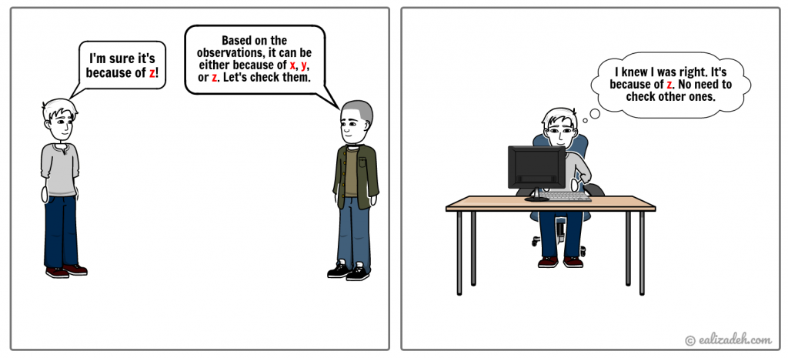
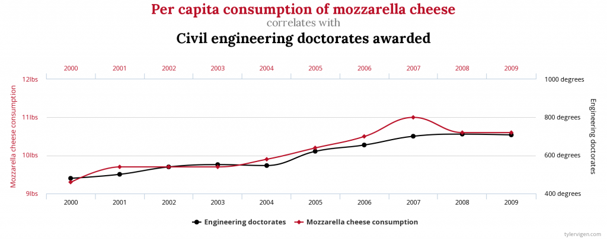

👉 This article is also published on Towards Data Science blog.
In this article, I will go over 15 cognitive errors from the book “The Art of Thinking Clearly” by Rolf Dobelli. Any scientist, analyst, or basically anyone who works with data needs to be familiar with these fallacies. My goal is to present these cognitive errors to think about them in your daily life and avoid falling into one!
I have created a graph network showing the connections among these cognitive errors. An interactive network graph on all 98 cognitive errors mentioned in the book can be found here. However, since that’s overwhelming and many of them are not directly related to this article, I have also created the network graph of all biases explained in this article and a few more below.
Cognitive Biases
The cognitive error refers to any systematic (not occasional) deviation from the logic (see Dobelli 2013). Let’s go over the interesting ones (in no particular order) below.
1. Base-Rate Neglect
This fallacy is a common reasoning error where people neglect the distribution of the data in favor of specific individual information. Here is an example of this bias from the book.
Mark is a man from Germany who wears glasses and listens to Mozart. Which one is more likely?
He is 1) a truck driver or 2) a literature professor in Frankfurt?
Most people will bet on Option 2 (the wrong option). The number of truck drivers in Germany is 10,000 times more than the number of literature professors in Frankfurt. Hence, it’s more likely that Mark is a truck driver (see Dobelli 2013).
1.1 False Positive Paradox
The false positive paradox is *an example of base-rate bias when the number of false positives is more than the number of true positives1.
Example: Imagine that 1% of a population is actually infected with a disease, and there is a test with a 5% false-positive rate and no false-negative rate, i.e. False Negative or FN = 0FN=0. The expected outcome of 10000 tests would be
- Infected and the test correctly indicates the diseases (True Positive): 10000 \times \frac{1}{100} = 100 \; (TP = 100)
- Uninfected and the test incorrectly indicates the person has the disease (False Positive) 10000 \times \frac{100 - 1}{100} \times 0.05 = 495 \; (FP=495)
So, a total of 100+495=595 people tested positive. And the remaining 10000−595=9405 \; (TN=9405) tests have correct negative results (True Negative).
Overall, only 100 of the 595 positive results are actually correct. The probability of actually being infected when the test results are positive is \frac{100}{100 + 495} = 0.168 or 16.8\%, for a test with an accuracy of 95\% (\frac{TP + TN}{TP + FP + FN + TN} = \frac{100 + 9405}{10,000}=0.9505)
2. Clustering Illusion
The brain seeks patterns.
The brain seeks patterns, coherence, and order where none really exists. As per this cognitive bias, we are oversensitive to finding a structure or rule. The human’s false pattern recognition is also known as apophenia. That is the tendency to make meaningful connections between unrelated things. Examples of such phenomena are gambler’s fallacy, figures in clouds, and patterns with no deliberate designs. A popular example of this is the “Face on Mars” as shown below:
This is prominent in the gambling, misinterpretation of statistics, conspiracy theories, etc. This cognitive error is also linked to two other errors: coincidence and false causality. The way to overcome the clustering illusion, particularly for anyone working with data, is to assume any pattern found in the data as random and statistically test the pattern found (see Beitman 2009).
3. Confirmation Bias

The confirmation bias is the only cognitive error that the book author wrote two parts about it. The following quote from the book says it all:
The confirmation bias is the mother of all misconceptions. —Rolf Dobelli
Confirmation bias is the tendency to interpret new information based on our existing beliefs and discard any opposing evidence (disconfirming evidence). The internet is the main ground for this bias. Think about the YouTube video suggestions made to us based on our watch history. It gives us recommendations to videos that align with our current views/beliefs/theories. We are actually prone to confirmation bias in many platforms that use Recommender systems like Google, Facebook, Twitter, etc.
4. Overconfidence Effect
This cognitive bias tells us that we systematically overestimate our ability to predict. In other words, this bias says that we believe subjectively that our judgment is better than it objectively is (see Dobelli 2013). No wonder why most major projects are not completed in less time or cheaper than initially predicted. The overconfidence bias is more common among experts. The reason is that experts obviously know more about their own field, but they overestimate exactly how much more.
5. Regression to Mean
Imagine the weather in your city reaches a record hot weather. The temperature will most likely drop in the next few days, back towards the monthly average. This bias depends on the random variance impacting any measurement, causing some to be extreme. Ignoring this bias leads to overestimating the correlation between the two measures. For instance, if an athlete performs extremely well in a year, we expect a better performance the year after. If that’s not the case, we may come up with causal relationships instead of considering that we probably overestimated the next year’s performance!
6. Induction
The inductive bias occurs when we draw universal conclusions from individual observations. For example, all observed people in a city wear glasses. Therefore all the people in that city wear glasses. This can lead to false causality (another bias I will talk about later). For example, every time Bob drinks milk, he gets cramps, and therefore he concludes that he gets cramps because he drinks milk!
7. Intention-To-Treat Error
Mainly used in medical research studies, the intention-to-treat (ITT) principle is crucial in interpreting the results of randomized clinical trials. It helps the researchers to assess the true effect of choosing a medical treatment. Let’s have an example to understand this fallacy better.
Suppose a pharmaceutical company developed a new drug for heart diseases. A study “proves” that the drug is improving the patient’s health and reduces the chance of dying from heart diseases. The five-year mortality rate of patients who take the drug regularly is 15%. The company may not tell you that the mortality rate of patients who took the drug irregularly was 30%. So, is the drug a complete success?
The point here is that the drug may not be the decisive factor here, but the patient’s behavior. The patients who didn’t take the drug according to the schedules may have side effects causing them to stop taking the drug. Hence, these patients will not be in the “regular category” of the study, for which a 15% rate was reported. So, because of the ITT error, the drug looks much more effective than it actually is (see Dobelli 2013).
8. False Causality
The Correlation does not imply causation.
This fallacy occurs when we wrongly infer a cause-and-effect relationship between two measurements solely based on their correlation. For instance, the per capita consumption of mozzarella cheese is highly correlated with civil engineering PhDs awarded (r=0.9586). Does this mean that the consumption of mozzarella cheese leads to more civil engineering doctorates awarded?

9. The Problem with Averages
Don’t cross a river if it is (on average) four feet deep. —Nassim Taleb
Working with averages may mask the underlying distribution. An outlier may significantly change the picture. This is important for anyone that works with data. A few extreme outliers may dominate.
10. Information Bias
This is when additional information does not add any value to the action or decision you are taking. Extra information does not guarantee better decisions, and at times it may actually put you at a disadvantage in addition to wasting time and money. Observational studies may be more prone to this type of bias, mainly because they rely on self-reporting data collection, although introducing randomness in interventional studies may reduce that. Missing data can be another reason for introducing information bias2.
11. The Law of Small Numbers
This law refers to incorrect reasoning that a small sample drawn from a population resembles the overall population. This is particularly important in statistical analysis. In his book “Thinking, Fast and Slow” (see Kahneman 2011), the Nobel prize winner Daniel Kahneman points out that even professionals and experts sometimes fall into this fallacy.
Suppose you have a bag of 1000 marbles, of which 500 are red, and the other 500 marbles are black. Without looking, you draw three marbles, and all turn out to be black. You may infer that all marbles in the bag are black. In this scenario, you’ve fallen into the fallacy of the law of small numbers.
The best way to counter this fallacy, as you may have guessed by now, is to use the Law of Large Numbers to have a sample size that resembles the overall population.
12. Ambiguity Aversion (Risk vs Uncertainty)
Suppose we have two bags. Bag A has 50 black and another 50 red marbles. Bag B also has 100 marbles (red and black), but we don’t know how many are for each color. Now, if you pull a red marble from a bag (of course without taking a look!!), you will win $100. So, do you choose bag A or bag B?
The majority will go with bag A. Now, let’s repeat the experiment, and this time if you pull a black marble from a bag, you will win $100. In this case, the majority will pick bag A too. This illogical result is known as Ellsberg Paradox, stating that people prefer known probabilities over unknown (ambiguous) ones (see Dobelli 2013). We should be aware of the difference between risks and uncertainties. These two terms are used interchangeably. However, there is a significant difference between the two.
👉 Risks are known probabilities, whereas uncertainties are unknown probabilities (ambiguous).
Although difficult, tolerating ambiguity/uncertainty may help us to handle this fallacy better.
13. Planning Fallacy
Have you wondered why you always underestimate the amount of time it takes you to finish a task or a project? You may fall into the planning fallacy. This cognitive error says that our planning is usually very ambitious. The two main reasons behind this fallacy are 1) wishful thinking and 2) neglecting the external influences. One way we can better plan is to have a premortem session that you can go over similar projects or consider outside influences beforehand.
14. Déformation Professionnelle
If your only tool is a hammer, all your problems will be nails. —Mark Twain
This fallacy is in place when you view things from one’s own profession instead of a broader perspective. This may impact anyone who learns something new and uses that in every situation. Let’s say you just learned about a new machine learning model. You may use it in cases that better models are available. I actually did the same. During my studies, I learned about support vector machine (SVM) (a binary classifier). Whenever I had a classification problem, I would initially think of using SVM, even in multiclass classification for which SVM may not be the best option to start for.
15. Exponential Growth Bias
Unlike linear growths, exponential growths are not intuitive to understand. Consider the following two options:
- You will get $1,000 every day for the next 30 days.
- You will get a cent on the first day, two cents on the second day, and the amount gets doubled every day for the next 30 days.
Which one do you choose? Option 1 will earn you $30,000 at the end, whereas Option 2 will get you over $10.7 million (you can calculate it yourself using x(t) = x_{0}(1 + \frac{r}{100})^{t} where x_0=0.01 (1 cent), r=100\% (doubling), t=30).
We can use a logarithmic scale to transform the original data for a better understanding.
Conclusion
In this article, I went over 15 cognitive biases that everyone who works with data should be aware of. For some, I’ve also provided quantitative examples to illustrate how we may fall into these fallacies. These cognitive errors are from the bestseller book “The Art of Thinking Clearly” by Rolf Dobelli. I recommend everyone to read this book as the author covers 98 cognitive errors that touch on different life aspects.
Useful Links
References
Footnotes
Wikipedia. Base rate fallacy↩︎
Catalogue of bias collaboration, Information Bias (2019), Sackett Catalogue Of Biases↩︎
Citation
@online{2020,
author = {},
editor = {},
title = {15 {Cognitive} {Errors} {Every} {Analyst} {Must} {Know} (+
{Network} {Graph} {View)}},
date = {2020-12-01},
url = {https://ealizadeh.com/blog/cognitive-errors-art-of-thinking-clearly},
langid = {en}
}